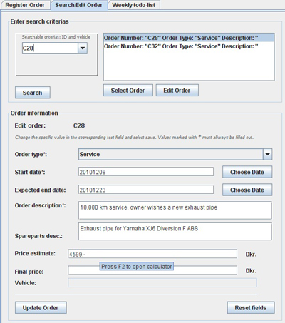

One of the most basically features of the system are the Order interface. This is ofcourse whats it all about.
As we take a close look on the order system, we have some fields that can be customized to the wich of the user.
This is mainly the orderdescription and sparepartsdescription, but also the expected end price can be filled out as the user see fit.
This is for giving the best possibillity for choosing the right informations from order to order.
Another interesting thing here is the datepicker that automaticly opens a calendar for choosing the right start date and an expected end date.
These informations are very important for autogenerating the next order feature, the todo-list.
Just like Vehicle and Owner, the Order can be found by searching and selected/enabled for editing. The illustration is shown below:

For the grand overview of the upcomming orders, the Order interface has a functionallity that at any given date, will generate a list
over all orders starting and/or ending within the next seven days from the present day. Using this feature, the planning will run a bit more smooth.
The illustration is shown below: